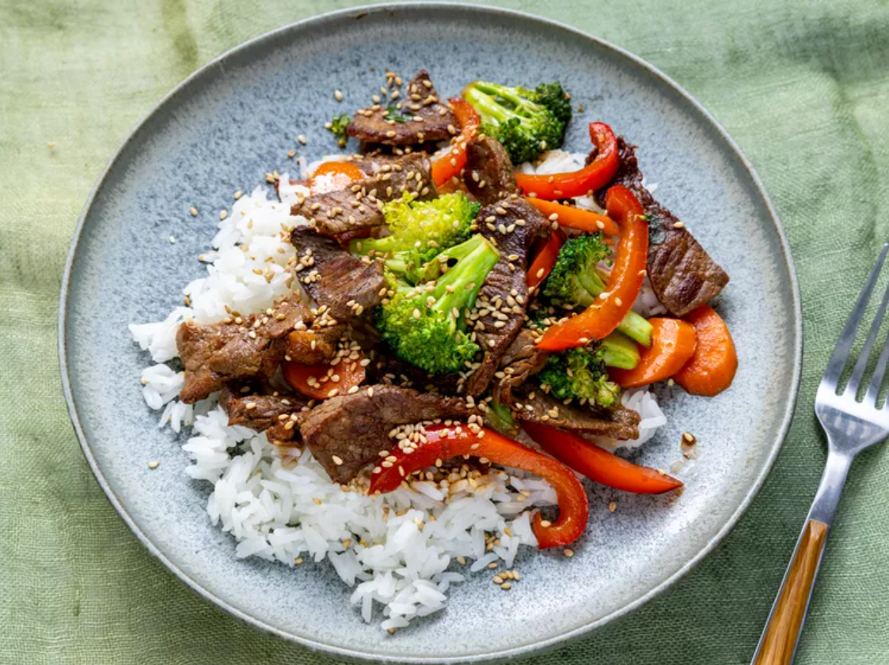

This recipe is originally from
Allrecipes, including all the images.

A Quick and Nutritious Meal
Looking to use up some leftover vegetables and pantry staples? Try this classic beef stir-fry. This quick and easy dish can be prepared in just 25 minutes using ingredients you likely already have. And if you don't, feel free to omit them.
This flavorful beef stir-fry is packed with vegetables and saucy goodness, making it the perfect weeknight dinner. Serve it over rice or lo mein noodles for a satisfying and delicious meal. It's the best beef stir-fry you'll ever make!
Ingredients
Note: The ingredients listed are for a serving size of 4.
2 tablespoons vegetable oil
1 pounds beef sirloin, cut into 2-inch strips
1 ½ cups fresh broccoli florets
1 red bell pepper, cut into matchsticks
2 carrots, thinly sliced
1 green onion, chopped
1 teaspoons minced garlic
2 tablespoons soy sauce
2 tablespoons sesame seeds, toasted
Steps
Gather all ingredients
Heat vegetable oil in a large wok or skillet over medium-high heat; cook and stir beef until browned, 3 to 4 minutes.
Move beef to the side of the wok and add broccoli, bell pepper, carrots, green onion, and garlic to the center of the wok. Cook and stir vegetables for 2 minutes.
Stir beef into vegetables and season with soy sauce and sesame seeds. Continue to cook and stir until vegetables are tender, about 2 more minutes.